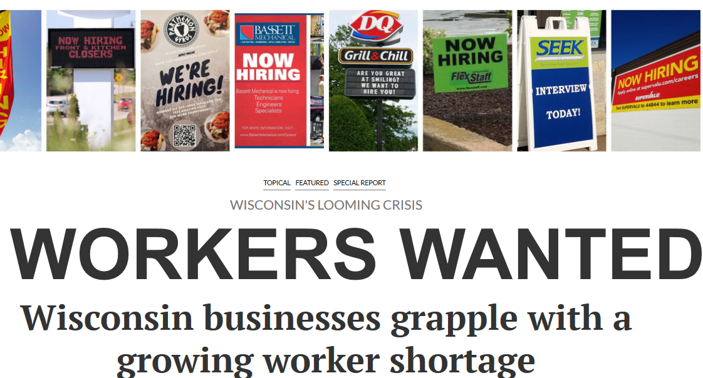
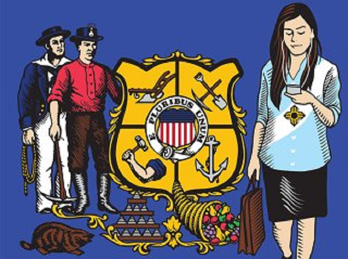

My work has been featured in numerous publications. I was a regular contributor to the Capitol Region Business Journal from 2005 to 2011, creating more than 100 maps for my column. More recently, my work has been carried by the Milwaukee Journal Sentinel, the Financial Times, the Wisconsin State Journal, the Isthmus and BizTimes. I have also appeared on several television programs such as WISC TV's On the Record, and Wisconsin Public Television's University Place.
Workers Wanted
The Workers Wanted series by Wisconsin State Journal reporter Matt DeFour examined a variety of challenges associated with Wisconsin's labor force both now and into the next decade. my work was featured in several articles: "To attract people, Wisconsin looks to transcend its cheesy reputation, "Wisconsin businesses grapple with a growing worker shortage;" and "Amid worker shortage, where will Foxconn find 13,000 employees?"
The Two Wisconsins
Marc Eisen's series in the Isthmus explores a number of potential constraints and challenges to future economic growth in Wisconsin. A number of my quotes (and maps despite being improperly cited), appear in the article.